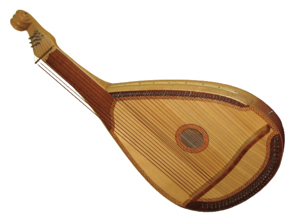
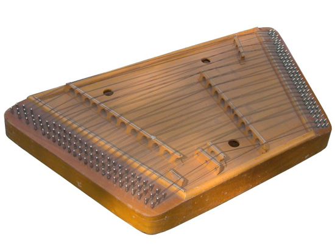
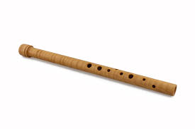
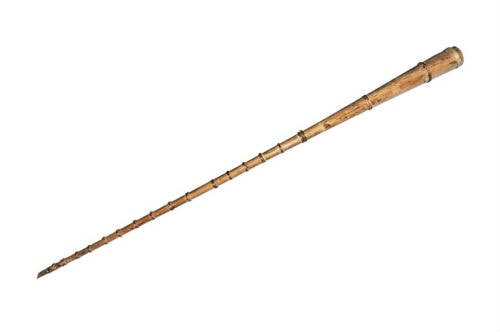
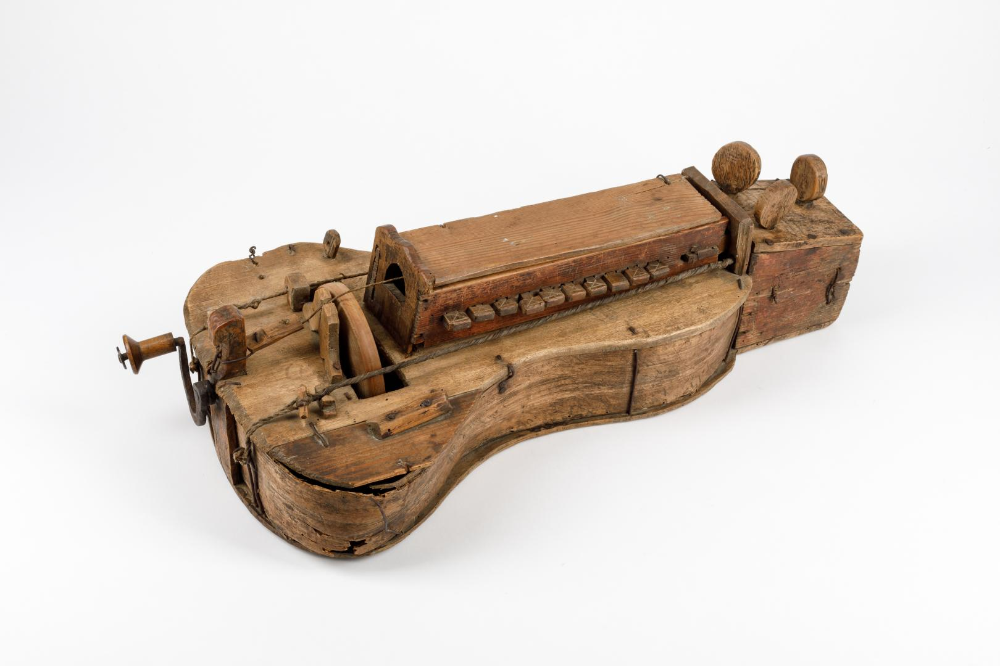

Бандура — струнно-щипковий інструмент із великим корпусом і десятками струн, які розташовані у два ряди. Її звучання м’яке, глибоке й мелодійне, що дозволяє відтворювати як сольні партії, так і акомпанемент. Інструмент вирізняється широким діапазоном і здатністю до виразної динаміки.

Бандура
Цимбали — струнний ударний інструмент, на якому грають дерев’яними паличками. Струни натягнуті над резонатором, і кожен удар створює яскравий, дзвінкий звук. Вони ідеально підходять для ритмічного супроводу та складних мелодичних фігур, і особливо ефектно звучать у колективному виконанні.

Цимбали
Сопілка — духовий інструмент із дерев’яним корпусом і отворами, які закриваються пальцями для зміни висоти тону. Має легке, щире звучання з теплотою природного тембру. Вона проста у конструкції, але дає можливість передавати різні емоційні відтінки — від ліричних до танцювальних мотивів.

Сопілка
Трембіта — довга конусоподібна дерев’яна труба, звук якої чути на кілометри. Її використовували не лише для музики, а й для передачі сигналів у горах. Вона має гучне, проникливе звучання і відзначається незвичайним тембром, який добре поєднується з відкритими просторами й ритуальними мотивами.

Трембіта
Колісна ліра — унікальний струнний інструмент, де замість смичка використовується колесо, що безперервно труться об струни. Одна рука крутить ручку, інша натискає клавіші для зміни нот. Її характерне монотонне, але мелодійне звучання надає композиціям особливої атмосфери і добре підходить для супроводу вокалу.
